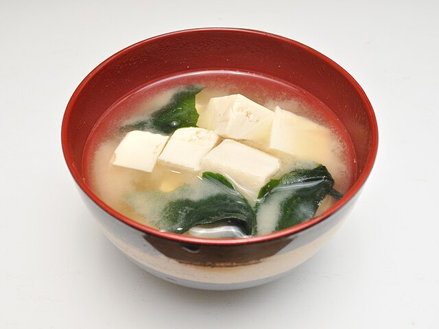

Home
Miso Soup

Description
The Miso soup is a soup full of savory flavors.
It's a traditional japanese soup, composed of miso pase (japanese
seasoning produced by fermenting beans or grains) and other ingredients.
Ingredients
- 4 cups of water
- 2 teaspoons of dashi granules
- 3 tablespoons of miso paste
- 1 (8 ounce) package of diced silken tofu
- 2 green onions, sliced diagonally into 1⁄2 inch pieces
Steps
- Combine water and dashi granules into a medium saucepan over
medium-high heat.
- Bring the mixture to a boil.
- Reduce heat to medium and whisk in the miso paste.
- Stir in the tofu.
- Separate the layers of green onions.
- Add them to the soup.
- Simmer gently for 2 to 3 minutes before serving.
- Enjoy your meal!